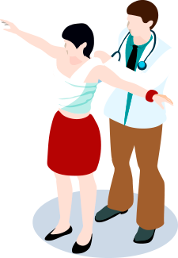

Выезд врача-травматолога на дом
При выезде врача на дом предоставляются услуги:
- Наложение гипса
- Диагностика травмы и заболевания
- Рентген на дому
- Консультации по подбору индивидуальной программы
- Вправление вывихов конечностей
- Рекомендации по уходу за лежачими больными
При необходимости направление на госпитализацию
Заказ обратного звонка
Врач свяжется с вами в течение 15 минут!
Вызвать врача-травматолога на дом и получить первичную консультацию можно по телефону:
8946493-34-89Консультация по подбору реабилитации на дому
Во время проведения консультации на дому врач-травматолог подберет индивидуальную программу реабилитации с учетом конкретных потребностей и диагноза пациента. Предложит определенные методики и систему упражнений, направленные на восстановление утраченных из-за болезни функций организма. В случае больших ограничений в подвижности пациента даст рекомендации по уходу, а так же составит перечень изделий и средств, облегчающих уход.
25Специалистов травматологов
15Лет успешной работы
560+Вызовов
за этот месяц
за этот месяц